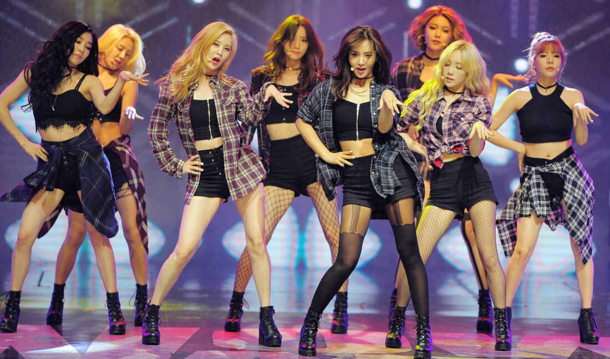
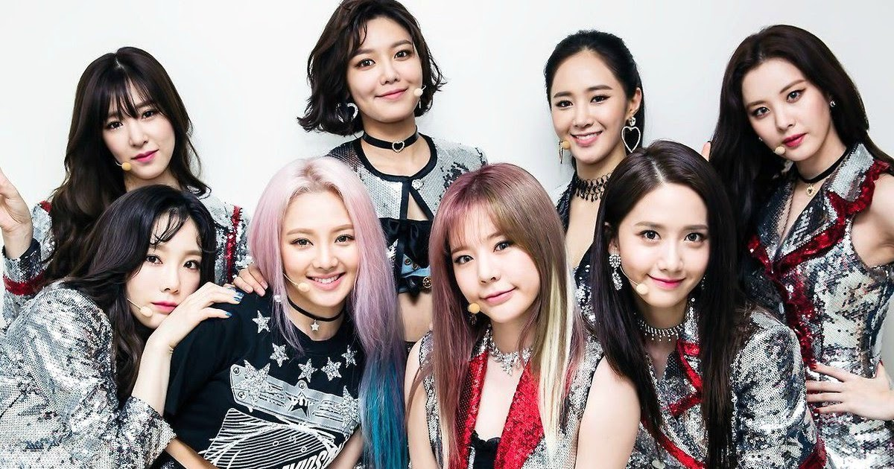
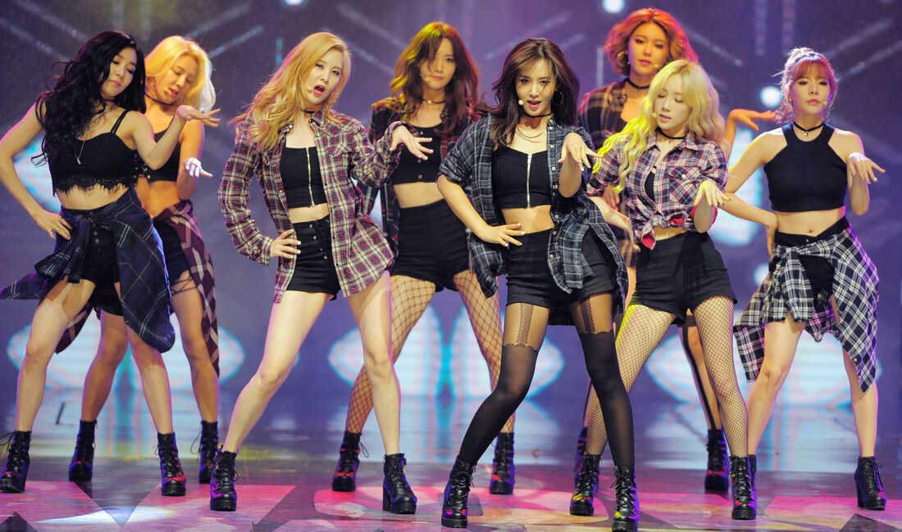
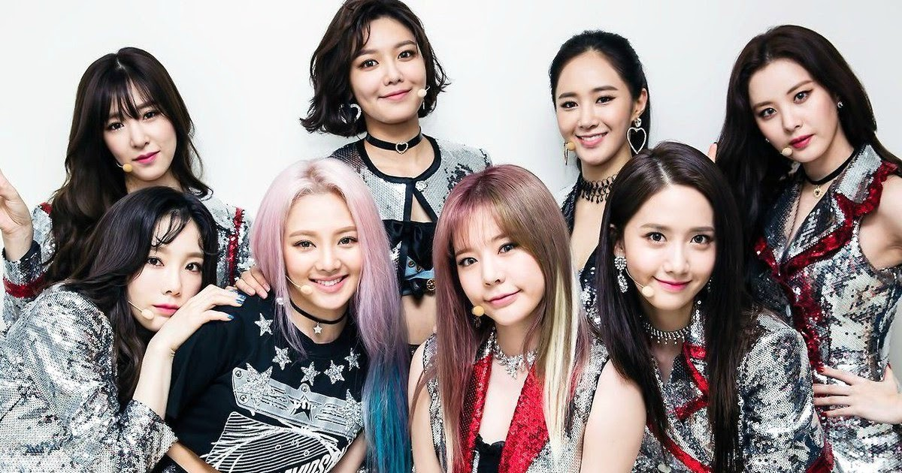
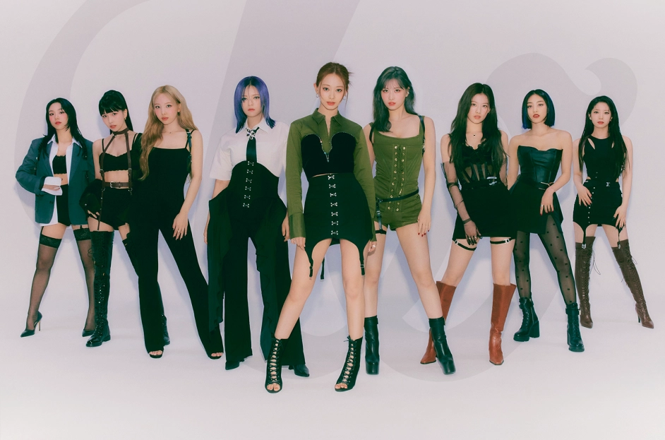
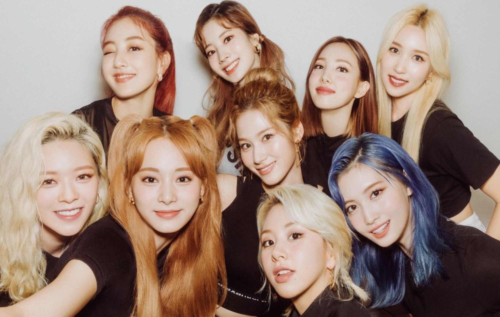
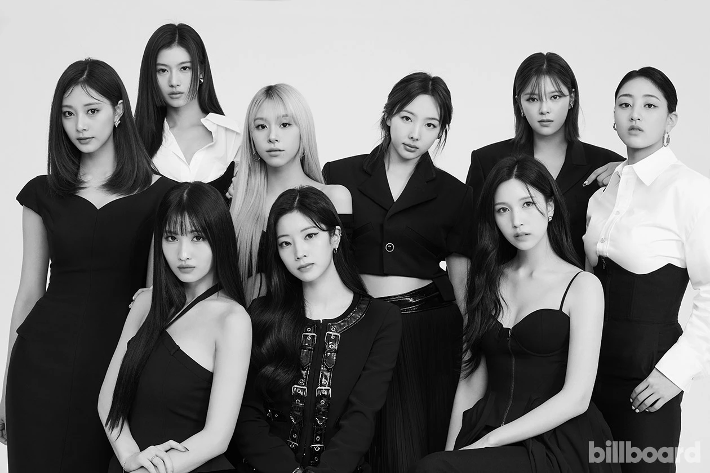
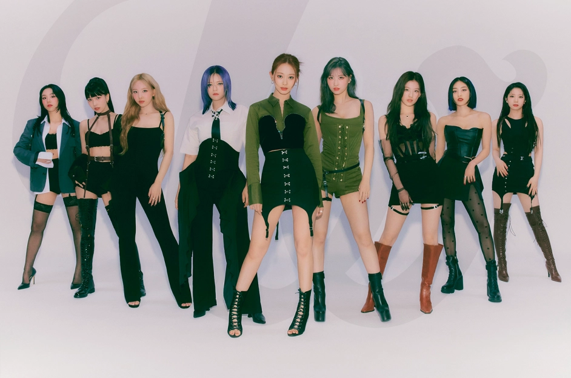
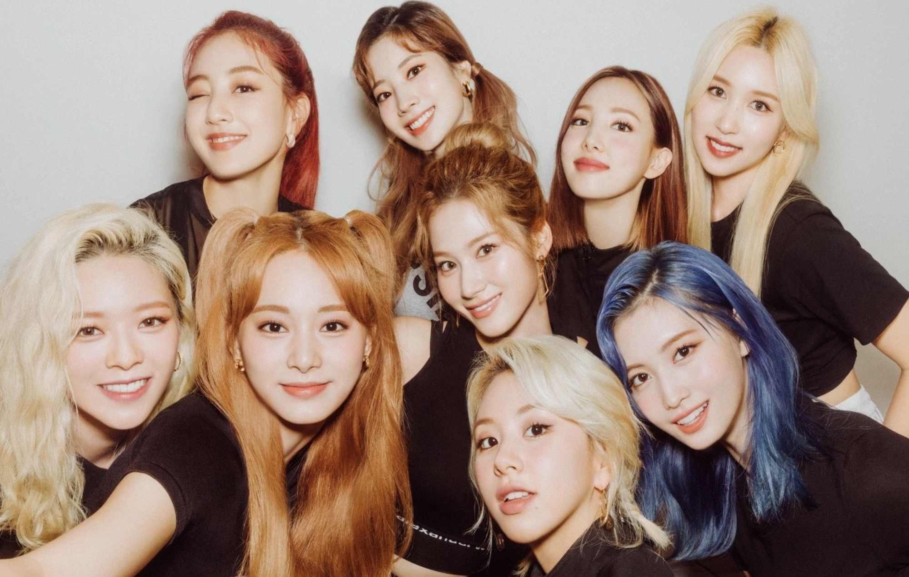
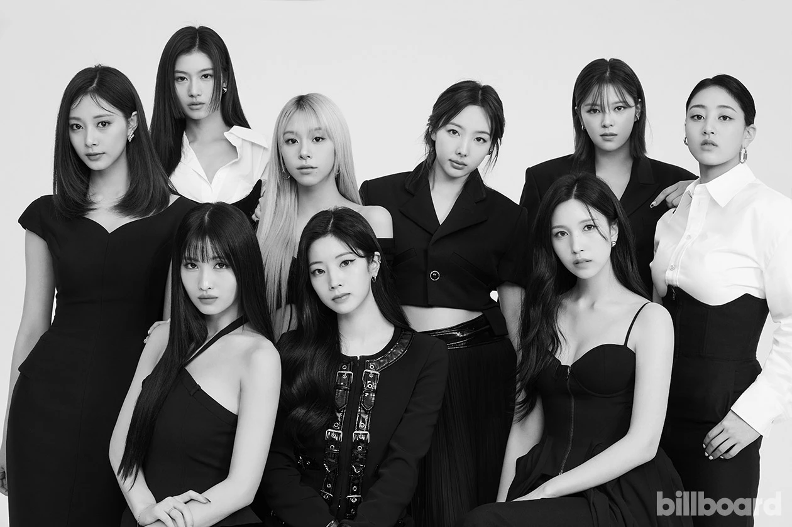

GROUP NAME: S.E.S.
COMPANY: SM COMPANY
MEMBERS:
Kim Yoo-jin (bornMarch 3, 1981)
known professionally as Eugene,
is a South Korean singer and actress.
She is best known as a
former member of the girl group.
INFO Wiki
SOCIAL MEDIA LINK:
Instagram
Twitter
Facebook
Choi Sung-hee (born February 28, 1980)
known professionally
as Bada, is a South Korean singer-songwriter, composer, musical
actress and television presenter.
She debuted as a member of the South Korean girl group S.E.S. in
1997. After S.E.S. disbanded in December 2002, she released her
first solo studio album, A Day of Renew, in October 2003.
Since then, she continued her active singing career with songs such
as Aurora, Eyes, V.I.P, GoGoGo, Queen, and Mad.
INFO LINK: Wiki
Shū Kunimitsu (邦光 洙, Kunimitsu Shū, born 23 October 1981)
also known as Yoo Soo-young and professionally as Shoo,
is a Korean-Japanese actress and singer who debuted as a member of the
South Korean girl group S.E.S. in 1997 and continued until 2002 when
the group disbanded. She contributed songs as a solo artist after
the group's disbandment before she went on hiatus from her music
career to pursue an acting career in 2006. She returned to the music
scene with releasing her single album Devote One's Love in 2010.
Afterwards, she went back on hiatus for four years before
transitioning back into acting in 2014.
INFO LINK: Wiki
S.E.S. (Hangul:
에스이에스; acronym for Sea, Eugene, Shoo)
was a South Korean girl
group formed in 1997 by SM Entertainment, featuring three members:
Bada, Eugene, and Shoo. Their debut album I'm Your Girl sold 650,000
copies, becoming the third best-selling album by a female group in
South Korea. Their follow-up albums, Sea & Eugene & Shoo in 1998,
Love in 1999 and A Letter from Greenland in 2000 also became
best-sellers. The group officially disbanded in December 2002, after
unsuccessful contract renewal negotiations with Bada and Eugene
while Shoo maintained her career with SM until 2006. They released
the compilation album Beautiful Songs in mid-2003 as their final.
release.
INFORMATION LINK: Wiki
YOUTUBE: S.E.S OFFICIAL YOUTUBE CHANNEL
Kim E-Z-Kim Hee-jung (Korean: 김희정; born January 31, 1979)
better known as Kim E-Z (Korean: 김이지),
is a South Korean singer and rapper, formerly a member of the Korean girl group Baby V.O.X.
Lee Hee-jin - Lee Hee-jin (born 16 May 1979)
is a South Korean actress and former member of girl group Baby V.O.X. Lee studied
at Dong-Ah Broadcasting College, then made her entertainment debut in 1997 as a member of popular
K-pop girl group Baby V.O.X.[2] After Baby V.O.X. disbanded in 2006, Lee decided to pursue an
acting career. After joining a few stage plays and musicals, Lee was cast in the television
drama It's Okay, Daddy's Girl (2010).[3] She has since played supporting roles in The Greatest
Love (2011),[4] My Lover, Madame Butterfly (2012), and Monstar (2013).
Kan Mi-youn - Kan Mi-youn (born February 2, 1982)
is a South Korean singer, actress, radio host, model, fashion designer,
and businesswoman. Kan joined the South Korean girl group Baby V.O.X. in October 1997, which
went on to become one of the most popular girl groups of that time.[1] Kan went on to become
a solo artist after the group disbanded in February 2006.
Shim Eun-jin - Shim Eun-jin
launched her singing career in 1998 as a member of Baby V.O.X, one of the most prominent
South Korean girl groups of the 1990s.[2] She was the first to leave the group at the end
of 2004, publicly stating that she did not agree with the direction their record company DR Music was heading.
Yoon Eun-hye - Yoon Eun-hye (Korean: 윤은혜; born October 3, 1984)
is a South Korean actress, singer, entertainer and model.
She debuted as a member of girl group Baby Vox, staying with the group from 1999 to 2005, as
as WSG Wannabe, a female project group in 2022. Yoon has since moved on to acting and is best known
for starring in the television dramas Princess Hours (2006), The Vineyard Man (2006), Coffee Prince
(2007), My Fair Lady (2009), Lie to Me (2011), and Missing You (2012).
Baby V.O.X (Korean: 베이비복스)
was a South Korean K-pop group formed in 1997, whose final and best-known line-up consisted of Kim E-Z,
Lee Hee-jin, Kan Mi-youn, Shim Eun-jin, and Yoon Eun-hye. They are considered one of the most prominent
"first generation" K-pop girl groups of the late 1990s and early 2000s along with S.E.S and Fin.K.L,
and they are recognized as being one of the groups at the forefront of the Korean Wave, having broken
into the Chinese market. The group released seven studio albums and disbanded in 2006.
MEMBERS:
Lee Hyori - Lee Hyo-ri (Korean: 이효리; born May 10, 1979)
is a South Korean singer, record producer, activist, actress and television presenter. Dubbed as
the "Nation's Fairy" during her Family Outing days, she debuted as a member of South Korean girl
group Fin.K.L, but has since become a solo artist. In 2003, she released her debut solo album
Stylish which won several "Artist of the Year" awards. In 2006, Lee was the highest-paid female
singer in South Korea when she signed a contract with Mnet Media.
Ock Joo-hyun - Ock Joo-hyun (Korean: 옥주현; sometimes spelled Ock Ju-hyun; born March 20, 1980)
is a South Korean singer and musical theatre actress, known mostly for her role as the lead singer
of the South Korean girl group Fin.K.L. After their unofficial breakup in 2002, Ock released three
solo albums and has participated in musicals, namely Wicked, Aida, Chicago, Cats, 42nd Street, and
The Count of Monte Cristo.
Lee Jin - Lee Jin (born March 21, 1980)
is a South Korean singer and actress. She made her entertainment debut as a member of the K-pop girl group
Fin.K.L, along with Lee Hyori, Ock Joo-hyun, and Sung Yu-ri. After Fin.K.L came to an unofficial end in
2002, Lee became an actress.
Sung Yu-ri - Sung Yu-ri (born March 3, 1981)
is a South Korean actress and singer. She made her entertainment debut in 1998 as a member of the now-defunct
K-pop group Fin.K.L. Sung turned to acting in 2002, starring in television dramas such as Thousand Years of
Love (2003), The Snow Queen (2006), Hong Gil-dong (2008), and Feast of the Gods (2010).
Fin.K.L (Korean: 핑클)
is a South Korean girl group formed by DSP Media in 1998 consisting of members Lee Hyori, Ock Joo-hyun, Lee Jin,
and Sung Yu-ri. Fin.K.L was one of the most popular K-pop groups of the late 1990s and early 2000s, alongside
rival girl group S.E.S.[1] The group cemented their popularity in South Korea with the release the songs
"To My Boyfriend" in 1998, "Forever Love" in 1999, and "Now" in 2000.
Taeyeon
She is the leader of SNSD and is known for her powerful vocals. Taeyeon has also
released solo music and has acted in various dramas.
Sunny
Sunny is known for her cheerful personality and bright vocals. She has also appeared in
several variety shows and is a popular radio DJ.
Hyoyeon
Yuri is known for her strong dance skills and has also acted in various dramas. She has
released solo music and has also appeared in variety shows
Yuri
Sunny is known for her cheerful personality and bright vocals. She has also appeared in
several variety shows and is a popular radio DJ.
Sooyoung
Sooyoung is also a member of the subunit Oh!GG and has acted in various dramas. She is
known for her sharp wit and humorous personality.
Yoona
Yoona is known for her stunning visuals and has acted in various dramas and movies. She
has also released solo music and is a popular brand ambassador.
Seohyun
Seohyun is also a member of the subunit TaeTiSeo and has released solo music. She has
also acted in various dramas and musicals
Jessica
Jessica left SNSD in 2014 to pursue a solo career. She is known for her unique voice and fashionable style.
Girls' Generation (SNSD)
The group debuted in 2007 under SM Entertainment and became one of the most successful K-pop girl groups of
all time. The members are Taeyeon, Sunny, Tiffany, Hyoyeon, Yuri, Sooyoung, Yoona, and Seohyun.
 



MEMBERS:
CL (씨엘) Lee Chae-rin (이채린)
– She used to be a JYP trainee.
– She admires Lil Kim and dreams to be a rapper like her.
– She spent much of her early life in Japan and France.
– She’s a “clean freak” and she’s responsible for cleaning 2ne1’s dorm.
– She doesn’t know how to use a computer but knows how to use iTunes.
– She likes to sleep.
Park Bom (박봄)
Bom’s older sister is the cello star Park Goeun.
– Once did a “Lettuce Diet” to lose weight.
– She used to be a sleepwalker.
– Was rejected once by SME.
– Was rejected by YGE for three years.
– She’s the youngest in her family.
– She is Christian.
– She’s shy, mysterious, and sensitive.
– She has a 4D personality.
Park Sandara (박산다라)
– She released an album that became “Platinum” twice, selling more than 60,000 copies in 6 months.
– She moved to the Philippines in 1995 due to her father’s business.
– She has a younger sister named Durami Park and a younger brother, Thunder (ex-member of MBLAQ)
– She entered YG in 2007.
Gong Minji (공민지)
– Minzy’s father’s surname is Lee. Gong is her mom’s surname before the marriage.
– She won several dance awards prior to her debut at various dance competitions.
– She was discovered after someone uploaded a dance audition clip of her on the internet.
– She’s the granddaughter of famous traditional dancer Gong Ok-jin.
– Trained for 5 years before joining 2ne1.
MEMBERS:
Yeeun (예은) Park Ye Eun (박예은)
– She was born in Goyang County, Gyeonggi-do, South Korea
– Her favorite color is green.
– Her favorite foods are Chobap and egg tarts.
– Yeeun is the only member from the original line up of Wonder Girls who has been there since the beginning.
(Never left or went on hiatus)
– She left JYP Entertainment and on April 10, it was reported that she officially signed with Amoeba Culture.
Yubin (유빈) Kim YuBin (김유빈)
She was born in Gwangju, South Korea
– In 2007, she was supposed to debut with G.NA, Hyosung (SECRET), UEE (After School), and Jiwon (SPICA) as girl group Five Girls, but they disbanded pre-debut.
– She debuted in 2007 with the Wonder Girls and replaced HyunA who left due to medical problems.
– She has written her own raps for several Wonder Girls songs (“Girls Girls”, “Me, In”, “Sweet Dreams” etc.)
– She loves to scuba dive and swim.
– In 2013 she made her acting debut with the drama “The Virus”.
Sunmi (선미) Sun Mi (선미) but legally changed it to Lee Sun Mi (이선미)
– She was born in Iksan, North Jeolla, South Korea.
– Her favorite color is purple.
– She can speak Korean and English.
– In January 2010 it was announced she will go on hiatus, in order to pursue her academic career.
– In August 2013, it was announced that Sunmi would return to her music career, debuting as a solo artist.
– Her debut single “24 Hours” was released on August 26, 2013, and achieved an all-kill on music charts.
Hyelim (혜림)Woo Hye Lim (우혜림)
– She was born in Seoul, South Korea.
– She lived in Hong Kong.
– She can speak English, Mandarin, Cantonese, Korean.
– Before debuting in Wonder Girls in 2010, Lim, as well as miss A members Fei and Jia, were in a JYP girl group entitled ‘Sisters’ or ‘JYP Sisters’ and where known as the Chinese Wonder Girls, but the band split after the two other members quit.
– Lim was added to the Wonder Girls in 2010 after Sunmi went on hiatus.
Hyuna (김현아) Kim Hyun Ah (김현아)
– She left Wonder Girls in 2007, because her parents were concerned over her health.
– Since 2009 she was a member of 4Minute who disbanded in June 2016 (under Cube Entertainment).
– She was a member of the duo Trouble Maker (with Hyunseung – former member of B2ST).
– She was a member of the co-ed group Triple H (with Pentagon’s Hui and former Pentagon’s E’Dawn)
Sohee (소희) Ahn So Hee (안소희)
-She left JYP Entertainment on December 21, 2013 to find a new company and pursue an acting career.
– She was born in Seoul, South Korea.
– Sohee acted in a movie “Train to Busan”.
Sunye (순예) Min Sun Ye (민선예)
– Sunye was raised by her grandparents because her mother died when she was very young and her father suffered from a health condition.
– She was born in Seoul, South Korea.
– Sunye was raised by her grandparents because her mother died when she was very young and her father suffered from a health condition.
– She was born in Seoul, South Korea.
– Her favorite color is blue.
– She is one of JYP’s longest serving trainees along with Jo Kwon from 2AM.
– She has a Korean-American husband which she met on a missionary trip to Haiti, they got married on January 26, 2013.
Jihyo (지효) Park Ji Hyo (박지효)
– She was born in Guri, Gyeonggi-do, South Korea.
– Her real name is Park Jisoo. Jihyo legalized her name to Park Jihyo right before Sixteen.
– She is the TWICE member who trained the most. She trained for 10 years.
– Jihyo was voted leader by the members, not JYP (by anonymous voting).
Nayeon (나연) Im Na Yeon (임나연)
– She was born in Myeongil-dong, Gangdong-gu, Seoul, South Korea.
– She is the oldest member.
– Nayeon was chosen for JYP’s girl group 6mix but they disbanded and never debuted.
– She was the first Sixteen member to be announced and also the first member to be confirmed in TWICE.
– Her representative color is Sky Blue.
– Nayeon’s favorite color is Purple (vLive).
Jeongyeon (정연) Yoo Kyung Wan (유경완)
– She was born in Jeonja-dong-gu, Jangan, Suwon, Gyeonggi, South Korea.
– Jeongyeon’s birth name is Yoo Kyung Wan. She changed her name in 3rd grade because she was teased as her name sounded like a boy’s name.
– Her father, Yoo Chang-joon, is a popular Korean traditional chef.
– She has 2 older sisters: Gong Seungyeon (actress) and Seo Yeon (office worker).
– It was revealed that she is a distant relative of K.A.R.D.‘s Somin.
– The leader of TWICE was decided by anonymous voting. Jeongyeon was in 2nd place.
Momo (모모) Minatozaki Sana (湊崎 紗夏)
– She was born in Tennōji-ku, Osaka, Japan.
– Sana is an only child.
– Sana got cast while she was shopping with her friends.
– She passed the audition on April 13, 2012.
– Her representative color is Purple.
Sana (사나) Yoo Kyung Wan (유경완)
– She was born in Kyōtanabe, Kyoto, Japan.
– Momo has an older sister, named Hana.
– She was scouted by JYP Entertainment after they saw a dance video of her and her older sister.
– She passed the audition on April 13, 2012. Her sister didn’t make it though.
– Momo was eliminated in ep 6 of SIXTEEN, but J.Y.Park decided to add her as a member of Twice, because of her dancing skills.
Mina (미나) Myoui Mina (名井 南)
– She was born in San Antonio, Texas, USA
– Her parents are both Japanese.
– She moved to Kobe, Japan, when she was a toddler.
– She has an older brother, named Kai.
– Her father, Akira Myoui, is a clinical professor at Osaka University Hospital.
Dahyun (다현) Kim Da Hyun (김다현)
– She was born in Eunhaeng-dong, Jungwon-gu, Seongnam, Gyeonggi-do, South Korea.
– Dahyun has an older brother, Myung Soo.
– In middle school, she performed a solo in a youth dance festival and was scouted by JYP Entertainment.
– She passed the audition on July 7, 2012, and officially became a trainee.
– Her representative color is White.
– She was the most popular during Sixteen.
Chaeyoung (채영) Son Chae Young (손채영)
– She was born in Dunchon-dong, Gangdong, Seoul, South Korea.
– Chaeyoung has a younger brother, Jeong Hun, which is an aspiring model.
– She passed the audition on June 6, 2012.
– Her representative color is Red.
– Chaeyoung chose 29 as her fav. no., because 2 (TWICE) and 9 (Number of members).
– She and Dahyun are in charge of washing the dishes at the dorm.
Tzuyu (쯔위) Chou Tzuyu (周子瑜)
– She was born in Tainan, Taiwan.
– She is the tallest member.
– She was discovered by JYP at the MUSE Performing Arts Workshop in Tainan in 2012 and went to South Korea on November 15, 2012, to start her training.
– Nayeon, Jeongyeon, Momo, Sana, Jihyo, Mina, Chaeyoung, and Tzuyu appeared in J.Y. Park‘s “Fire” M/V.
– Her representative color is Blue.
– Tzuyu’s family has a dog named Gucci, her mom’s friend named it after the brand.
– Tzuyu’s favorite number is 25, because she thinks it is a cool number.
 





© Group 1 All Right Reserved